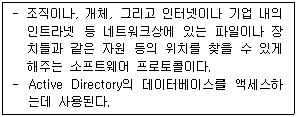
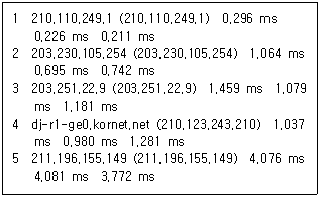
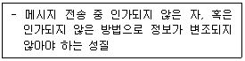
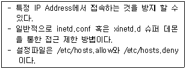

네트워크관리사-1급 (2016-04-10 기출문제)
1과목: TCP/IP
1. TCP/IP 계층 중 다른 계층에서 동작하는 프로토콜은?
- IP
- ICMP
- UDP
- IGMP
(정답률: 75%)

2. B Class의 호스트 ID에 사용 가능한 Address 개수는?
- 116,777,224개
- 65,534개
- 254개
- 126개
(정답률: 80%)
3. IGMP에 대한 설명 중 올바른 것은?
- 시작지 호스트에서 여러 목적지 호스트로 데이터를 전송할 때 사용된다.
- TCP/IP 프로토콜의 IP에서 접속없이 데이터의 전송을 수행하는 기능을 규정한다.
- 네트워크의 구성원에 패킷을 보내기 위한 하드웨어 주소를 정한다.
- IP에서의 오류(Error) 제어를 위하여 사용되며, 시작지 호스트의 라우팅 실패를 보고한다.
(정답률: 62%)
4. IP Header Fields에 대한 내용 중 잘못된 것은?
- Version - 4bits
- TTL - 16bits
- Type of Service - 8bits
- Header Checksum - 16bits
(정답률: 65%)
5. IPv6는 IPng(IP next generation), 차세대 인터넷 프로토콜이라고 불리고 있다. IPv6 주소 필드 bit 수는?
- 32bit
- 64bit
- 128bit
- 256bit
(정답률: 73%)
6. IP Address '172.16.0.0'인 경우에 이를 14개의 서브넷으로 나누어 사용하고자 할 경우 서브넷 마스크 값은?
- 255.255.228.0
- 255.255.240.0
- 255.255.248.0
- 255.255.255.192
(정답률: 66%)
7. 네트워크 상에서 기본 서브넷 마스크가 구현될 때, IP Address가 '203.240.155.32'인 경우 아래 설명 중 올바른 것은?
- Network ID는 203.240.155 이다.
- Network ID는 203.240 이다.
- Host ID는 155.32가 된다.
- Host ID가 255일 때는 루프백(Loopback)용으로 사용된다.
(정답률: 75%)
8. 서브넷 마스크(Subnet Mask)에 대한 설명 중 올바른 것은?
- IP Address에서 Network Address와 Host Address를 구분하는 기능을 수행한다.
- 하나의 Network를 두 개 이상의 Network로 나눌 수 없다.
- IP Address는 효율적으로 관리하나 트래픽 관리 및 제어가 어렵다.
- 불필요한 브로드캐스트 메시지를 제한할 수 없다.
(정답률: 72%)
9. 라우터는 자신을 네트워크의 중심점으로 간주하여 최단 경로의 트리를 구성하는 방식으로, 사용자에 의한 경로의 지정, 가장 경제적인 경로의 지정, 복수경로 선정 등의 기능을 제공하는 라우팅 프로토콜은?
- OSPF(Open Shortest Path First)
- IGRP(Interior Gateway Routing Protocol)
- RIP(Routing Information Protocol)
- BGP(Border Gateway Protocol)
(정답률: 68%)
10. IPv6 중 그룹 내에 가장 가까운 인터페이스를 가진 호스트 사이의 통신이 가능한 형태는?
- Unicast Type
- Anycast Type
- Multicast Type
- Broadcast Type
(정답률: 48%)
11. TCP 세션의 성립에 대한 설명으로 옳지 않은 것은?
- 세션 성립은 TCP Three-Way Handshake 응답 확인 방식이라 한다.
- 실제 순서번호는 송신 호스트에서 임의로 선택된다.
- 세션 성립을 원하는 컴퓨터가 ACK 플래그를 '0'으로 설정하는 TCP 패킷을 보낸다.
- 송신 호스트는 데이터가 성공적으로 수신된 것을 확인하기까지는 복사본을 유지한다.
(정답률: 60%)
12. UDP의 특징으로 옳지 않은 것은?
- 비연결형 서비스이다.
- ACK를 사용하지 않는다.
- 체크섬 필드가 필요없다.
- 경량의 오버헤드를 갖는다.
(정답률: 58%)
13. ARP에 대한 설명 중 올바른 것은?
- TCP/IP 프로토콜에서 데이터의 전송 서비스를 규정한다.
- TCP/IP 프로토콜의 IP에서 접속 없이 데이터의 전송을 수행하는 기능을 규정한다.
- 네트워크의 구성원에 패킷을 보내기 위하여 IP Address를 하드웨어 주소로 변경한다.
- 인터넷상에서 전자우편(E-Mail)의 전송을 규정한다.
(정답률: 72%)
14. ICMP 프로토콜의 기능으로 옳지 않은 것은?
- 여러 목적지로 동시에 보내는 멀티캐스팅 기능이 있다.
- 두 호스트간의 연결의 신뢰성을 테스트하기 위한 반향과 회답 메시지를 지원한다.
- 'ping' 명령어는 ICMP를 사용한다.
- 원래의 데이터그램이 TTL을 초과하여 버려지게 되면 시간 초과 에러 메시지를 보낸다.
(정답률: 67%)
15. SSH 프로토콜은 외부의 어떤 공격을 막기 위해 개발 되었는가?
- Sniffing
- DoS
- Buffer Overflow
- Trojan Horse
(정답률: 71%)
16. TCP/IP 프로토콜의 하나로 호스트끼리 Mail을 전송하는데 관여하는 프로토콜은?
- SNMP
- SMTP
- UDP
- TFTP
(정답률: 75%)
2과목: 네트워크 일반
17. DNS(Domain Name System)에 대한 설명으로 옳지 않은 것은?
- 숫자로 구성된 IP Address가 기억하기 힘들다는 단점을 보완하기 위해 만들어졌다.
- Top Level에는 주로 국가명이 오며 InterNIC에 Domain 등록을 할 경우는 국가와 관계없이 com, org, net, edu 등을 부여받을 수 있다.
- 처음에 내부 네트워크의 컴퓨터들에게 별명(Alias)을 부여하기 위해 고안되었다가 인터넷으로 확장되었다.
- 모든 호스트들은 반드시 Domain Name을 가진다.
(정답률: 67%)
18. 오류 검출 방식인 ARQ 방식 중에서 일정한 크기 단위로 연속해서 프레임을 전송하고 수신측에 오류가 발견된 프레임에 대하여 재전송 요청이 있을 경우 잘못된 프레임만을 다시 전송하는 방법은?
- Stop-and-Wait ARQ
- Go-back-N ARQ
- Selective-repeat ARQ
- Adaptive ARQ
(정답률: 70%)
19. OSI 7 Layer의 각 Layer 별 Data 형태로서 적당하지 않은 것은?
- Transport Layer - Segment
- Network Layer - Packet
- Datalink Layer - Fragment
- Physical Layer - bit
(정답률: 72%)
20. 흐름제어, 오류제어, 접근제어, 주소 지정을 담당하는 계층은?
- 네트워크 계층
- 데이터링크 계층
- 물리 계층
- 전송 계층
(정답률: 59%)
21. 패킷교환방식으로 옳지 않은 것은?
- 패킷은 가변 길이를 갖는다.
- 패킷은 절대로 손실될 수 없다.
- 패킷은 단편화될 수 있다.
- 패킷은 중복될 수 있다.
(정답률: 75%)
22. 네트워크 액세스 방법에 속하지 않는 것은?
- CSMA/CA
- CSMA/CD
- POSIX
- Token Pass
(정답률: 72%)
23. 축적 전송방식의 일환으로 프레임의 수신과 CRC에러 확인 후 목적지로 전송하는 방식으로 프레임의 길이만큼 전달지연이 발생하는 LAN의 스위칭 방식은?
- Cut Throguh
- Store And Forward
- Call Together
- Store And Backward
(정답률: 71%)
24. 프로토콜의 기본적인 기능 중에서 수신측에서 데이터 전송량이나 전송 속도 등을 조절하는 기능은?
- Flow Control
- Error Control
- Sequence Control
- Connection Control
(정답률: 72%)
25. 네트워크 관리 및 네트워크 장치와 그들의 동작을 감시, 총괄하는 프로토콜은?
- ICMP
- SNMP
- SMTP
- IGMP
(정답률: 68%)
26. 송신측에서 여러 개의 터미널이 하나의 통신 회선을 통하여 신호를 전송하고, 전송된 신호를 수신측에서 다시 여러 개의 신호로 분리하는 것은?
- Multiplexing
- MODEM
- DSU
- CODEC
(정답률: 71%)
27. 비동기 데이터(Asynchronous Data) 전송에 필요한 신호는?
- 처음과 마지막 자료(start/stop)
- 인터럽트(Interrupt)
- 상태자료(Status)
- 캐리(Carry)
(정답률: 58%)
3과목: NOS
28. Windows Server 2008 R2에서 'www.icqa.or.kr'의 IP Address를 얻기 위한 콘솔 명령어는?
- ipconfig www.icqa.or.kr
- netstat www.icqa.or.kr
- find www.icqa.or.kr
- nslookup www.icqa.or.kr
(정답률: 75%)
29. Linux 시스템에서 사용되는 DNS 관련 파일로 옳지 않은 것은?
- named.conf
- zone_file
- rzone_file
- reverse_zone_file
(정답률: 60%)
30. 아래의 내용에서 설명하는 프로토콜은?

- DHCP
- SNMP
- LDAP
- Kerberos 버전5
(정답률: 62%)
31. Linux에서 외부에서 마운트 요청이 오면 응답해 주는 역할을 하는 데몬(Daemon)은?
- rpc.mountd
- rpc.nfsd
- rpc.lockd
- rpc.statd
(정답률: 66%)
32. Windows Server 2008 R2의 'netstat' 명령어로 알 수 없는 정보는?
- TCP 접속 프로토콜 정보
- ICMP 송수신 통계
- UDP 대기용 Open 포트 상태
- 접속자 MAC 주소
(정답률: 59%)
33. Linux에서 기본적으로 생성되는 디렉터리로 옳지 않은 것은?
- /etc
- /root
- /grep
- /home
(정답률: 72%)
34. Linux의 퍼미션(Permission)에 대한 설명 중 옳지 않은 것은?
- 파일의 그룹 소유권을 변경하기 위한 명령은 'chgrp'이다.
- 파일의 접근모드를 변경하기 위한 명령은 'chmod'이다.
- 모든 사용자에게 모든 권한을 부여하려면 권한을 '666'으로 변경한다.
- 파일의 소유권을 변경하기 위한 명령은 'chown'이다.
(정답률: 70%)
35. 자신의 Linux 서버에 네임서버 운영을 위한 BIND Package가 설치되어 있는지를 확인해 보기 위한 명령어는?
- #rpm -qa l grep bind
- #rpm -ap l grep bind
- #rpm -qe l grep bind
- #rpm -ql l grep bind
(정답률: 62%)
36. 사용자 계정 생성에 대한 설명으로 옳지 않은 것은?
- 사용자 계정 생성 명령어는 'useradd' 또는 'adduser' 이다.
- 사용자 계정에 대한 정보는 /etc/passwd에 저장된다.
- /etc/passwd에 저장되는 형식은 Login_Name:암호:UID:GID:사용자 정보:홈디렉터리:사용 Shell이다.
- 사용자 ID를 만들때 숫자를 맨 앞에 둘 수 없다.
(정답률: 33%)
37. 아래 내용은 Linux의 어떤 명령을 사용한 결과인가?

- ping
- nslookup
- traceroute
- route
(정답률: 62%)
38. tar로 묶인 'mt.tar'를 풀어내는 명령은?
- tar -tvf mt.tar
- tar -cvf mt.tar
- tar -cvvf mt.tar
- tar -xvf mt.tar
(정답률: 70%)
39. Linux에서 DNS를 설치하기 위한 'named.zone' 파일의 SOA 레코드에 대한 설명으로 옳지 않은 것은?
- Serial : 타 네임서버가 이 정보를 유지하는 최소 유효기간
- Refresh : Primary 네임서버의 Zone 데이터베이스 수정 여부를 검사하는 주기
- Retry : Secondary 네임서버에서 Primary 네임서버로 접속이 안 될 때 재시도를 요청하는 주기
- Expire : Primary 네임서버 정보의 신임 기간
(정답률: 63%)
40. Windows Server 2008 R2의 Active Directory 서비스 중에서 사용자 지정된 공개 키 인증서를 만들고 배포하고 관리하는 방법을 제공하는 서비스는?
- AD 인증서 서비스
- AD 도메인 서비스
- AD Federation 서비스
- AD Rights Management 서비스
(정답률: 71%)
41. DNS에서 지원하는 레코드 형식 중 역방향조회에 사용되는 레코드는?
- A
- AAAA
- PTR
- SOA
(정답률: 69%)
42. Windows Server 2008 R2의 FTP Server 설정에 관한 설명으로 옳지 않은 것은?
- FTP 방화벽 지원 - 외부 방화벽에 대해 패시브 연결을 수락할지에 대해 서버를 구성할 수 있다.
- FTP 메시지 - 사용자 지정 환영메시지, 종료메시지, 그리고 추가적인 연결이 사용가능하지 않아 사용자를 거부했을 때의 메시지 설정이 가능하다.
- FTP 사용자 격리 - 다른 사용자의 FTP 홈 디렉토리에 대한 접근을 막을 수 있게 한다.
- FTP SSL 설정 - FTP 사이트 생성 시에 연결한 SSL 설정을 확인하는 기능으로 한 번만 수정할 수 있다.
(정답률: 67%)
43. Windows Server 2008 R2에서 자신의 네트워크 안에 있는 클라이언트 컴퓨터가 부팅될 때 자동으로 IP 주소를 할당해주는 서버는?
- DHCP 서버
- WINS 서버
- DNS 서버
- 터미널 서버
(정답률: 72%)
44. Windows Server 2008 R2의 VPN(Virtual Private Networks)에 관한 설명으로 옳지 않은 것은?
- VPN을 사용하기 위해서는 최소 두 개의 IP가 필요하다.
- 서버관리자의 GUI 환경에서는 [서버 역할 - 네트워크 정책 및 엑세스 - 라우팅 및 원격 엑세스 서비스 - 원격 엑세스 탭] 순으로 접근하여 설치한다.
- 클라이언트는 VPN에 한번 접속하면 VPN 연결을 통하지 않고도 내부 네트워크에 접근이 가능하다.
- Gateway-to-Gateway VPN은 두 개의 VPN 서버가 공용 네트워크상에서 연결된다.
(정답률: 65%)
45. Linux 시스템에서 삼바서버(Samba Server)의 환경 설정파일은?
- samba.conf
- smbusers
- lmhosts
- smb.conf
(정답률: 58%)
4과목: 네트워크 운용기기
46. 환경 변화에 실시간 조정을 하며 문제 해결과 트래픽 최적화를 자동으로 수행하는 라우팅 방식은?
- 정적(Static)라우팅 프로토콜
- 동적(Dynamic)라우팅 프로토콜
- 최적화 라우팅 프로토콜
- 실시간 라우팅 프로토콜
(정답률: 66%)
47. 네트워크 관리자가 라우터에 접속하여 현재의 커넥션 수를 확인하고자 한다. 올바른 명령은?
- # sh -tcp conn
- # sh -tcp state
- # sh -tcp netstat
- # sh -tcp ipconfig
(정답률: 45%)
48. 두 개 이상의 동일한 LAN 사이를 연결하여 네트워크 범위를 확장하고, 스테이션 간의 거리를 확장해 주는 네트워크 장치는?
- Repeater
- Bridge
- Router
- Gateway
(정답률: 54%)
49. Gateway에 대한 설명 중 올바른 것은?
- OSI 7 Layer 중 네트워크 계층에서 동작한다.
- 상이한 네트워크 프로토콜, 데이터 포맷 등을 가지고 있는 두 개의 시스템 사이를 중개해 주는 역할을 하는 장치이다.
- 서로 구조가 같은 두 개의 통신망을 연결하는데 쓰이는 장치 또는 시스템이다.
- 2계층 스위치가 이에 속한다.
(정답률: 60%)
50. 스위치에서 발생하는 루핑(Looping)에 대한 설명으로 옳지 않은 것은?
- 동일한 목적지에 대해 두 개 이상의 경로가 있을 때 발생한다.
- 브로드 캐스트 패킷에 의해 발생한다.
- 필터링 기능 때문에 발생한다.
- 스패닝 트리 프로토콜을 이용해서 루핑을 방지해줄 수 있다.
(정답률: 59%)
5과목: 정보보호개론
51. SET(Secure Electronic Transaction)에 대한 설명 중 옳지 않은 것은?
- 초기에 마스터카드, 비자카드, 마이크로소프트, 네스케이프 등에 의해 후원되었다.
- 인터넷상에서의 금융 거래 안전을 보장하기 위한 시스템이다.
- 메시지의 암호화, 전자증명서, 디지털서명 등의 기능이 있다.
- 지불정보는 비밀키를 이용하여 암호화한다.
(정답률: 49%)
52. 정보보호 서비스 개념에 대한 아래의 설명에 해당 하는 것은?

- 무결성
- 부인봉쇄
- 접근제어
- 인증
(정답률: 69%)
53. Linux의 서비스 포트 설정과 관련된 것은?
- /etc/services
- /etc/pam.d
- /etc/rc5.d
- /etc/service.conf
(정답률: 53%)
54. Linux 시스템에서 아래 내용이 설명하는 것은?

- TCP_Wrapper
- PAM
- SATAN
- ISSm
(정답률: 61%)
55. Linux 커널에서 기본으로 제공하는 넷필터(Net Filter)를 이용하여 방화벽을 구성할 수 있는 패킷 제어 프로그램은?
- iptables
- nmap
- fcheck
- chkrootkit
(정답률: 64%)
56. 공개키 암호화 방식에 대한 설명 중 옳은 것은?
- 암호화와 복호화시 같은 키를 사용한다.
- 수신된 데이터의 부인 봉쇄 기능은 지원하지 않는다.
- 전자 서명의 구현이 가능하다.
- 비밀키 암호화 방식보다 처리 속도가 빠르다.
(정답률: 40%)
57. 다음 중 스니핑(Sniffing) 해킹 방법에 대한 설명으로 가장 올바른 것은?
- Ethernet Device 모드를 Promiscuous 모드로 전환하여 해당 호스트를 거치는 모든 패킷을 모니터링 한다.
- TCP/IP 패킷의 내용을 변조하여 자신을 위장한다.
- 스텝 영역에 Strcpy와 같은 함수를 이용해 넘겨받은 인자를 복사함으로써 스택 포인터가 가리키는 영역을 변조한다.
- 클라이언트로 하여금 다른 Java Applet을 실행시키도록 한다.
(정답률: 60%)
58. 웹의 보안 기술 중에서, 네트워크 내에서 메시지 전송의 안전을 관리하기 위해 네스케이프에서 만들어진 프로토콜로 HTTP에서 가장 많이 사용되며 RSA 암호화 기법을 이용하여 암호화된 정보를 새로운 암호화 소켓으로 전송하는 방식은?
- PGP
- SSL
- STT
- SET
(정답률: 71%)
59. Linux에서 사용자 계정 생성 시 사용자의 비밀번호에 관한 정보가 실제로 저장되는 곳은?
- /usr/local
- /etc/password
- /etc/shadow
- /usr/password
(정답률: 61%)
60. 네트워크 보안을 위하여 설치되는 방화벽(Firewall)에서 보안 및 모니터링을 위하여 제공하는 주요 기능으로 옳지 않은 것은?
- 내부에서 행해지는 해킹 행위 방지
- 사용자 인증
- 유용한 통계 정보를 제공할 수 있는 로깅 기능
- 바이러스에 감염된 프로그램의 전송 방지 기능
(정답률: 49%)